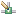

The Explorer View is used to manage connections to Jena stores, these connection descriptions are persisted so developers can maintain a set of connections between Eclipse sessions. The view allows a user to add a new connection, delete a connection, close an open connection or to set the selected connection to be the "default". The notion of a default connection is used for some fast-track actions so that the user doesn't have to identify the target connection for these actions.
The following is an image of the explorer view with two connections, one is open (denoted by the colored connection), one close (the connection is greyed out) and one is marked as the default (with a marker glyph). While a user can close an open connection the opening of connections is handled automatically by the tool on demand.
The following table summarizes the actions available from the toolbar and context menus associated with this view.
| Icon | Action | Context | Comments |
|---|---|---|---|
| New Connection | Connection folder | Starts the New Connection wizard | |
 |
Delete | Connection | Deletes the currently selected connection. |
| Close | Connection | Closes the currently selected connection. | |
|  | Make Default | Connection | Makes the currently selected connection the default. |